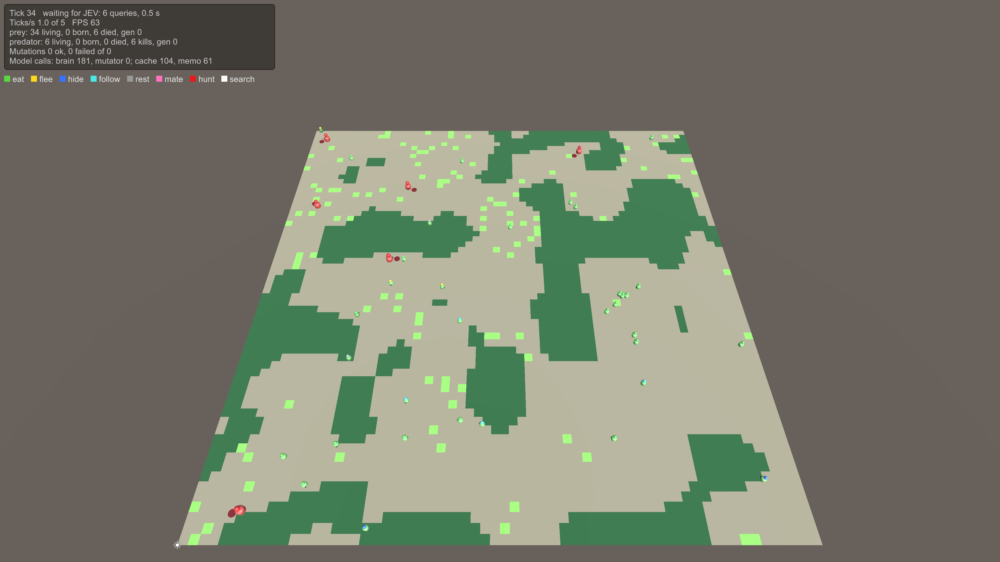

EvoSim: evolving animals in Unity
Animals whose behaviour is written in English. Each gene is a short sentence, such as "Run from any predator you see." At every decision, a language model reads an animal's genes together with what it senses, and gives a probability for each action it could take. Animals eat, flee, hide, hunt and mate. Their babies inherit a mix of their parents' sentences, and now and then a sentence mutates. Over generations, the sentences that keep animals alive spread.

The HideVsFlee scene at tick 34. Light green cells are grass and dark green cells are thickets where prey can hide. The ball above each animal shows its current action: green eat, yellow flee, blue hide, red hunt, and so on. The panel counts living animals, births, deaths and model calls.
Where to start
| You want to… | Read |
|---|---|
| open a scene and watch it run | Getting started |
| understand the whole loop in one page | How EvoSim works |
| learn one part in depth | the guides: the world, a tick, senses, brains, actions, genes, mutation… |
| add a sense, an action, a gene, a brain, a phase… | Extending EvoSim, then the page for your kind of module |
| rewrite a reference module as an exercise | The teaching path |
| look up a class or a method | the API reference, grouped by folder |
know exactly what must hold (rule SENSE-01, DEC-30…) |
the specification |
Three ideas to keep in mind
- The scene is the configuration. A world is a tree of GameObjects. Every feature (a sense, an action, a gene, a tick phase, a brain) is a component in that tree. Add a component and its feature is in. Disable it and the feature is gone. No code changes needed.
- Animals are data. An animal is a plain C# object, not a GameObject. Phases process all animals in batches, and the visible bodies only display them.
- A seed replays a run exactly. Every random draw comes from a named stream seeded by the World. The same seed and the same answers from the brain give the same run, event for event. Your modules must keep this: see Determinism and replay.
About this site
The API reference is generated from the documentation comments in the code (///). The
specification is the contract the code implements (Docs/Interface in the repository). Each rule id
in the text, such as SENSE-01, links to its rule. To document your own code the same way, see
Documenting your code.